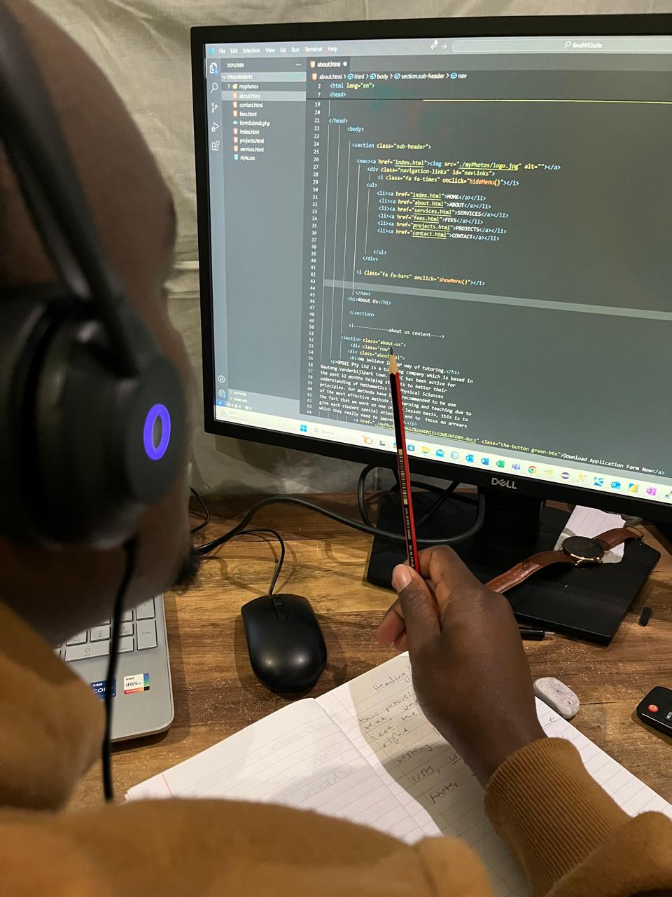
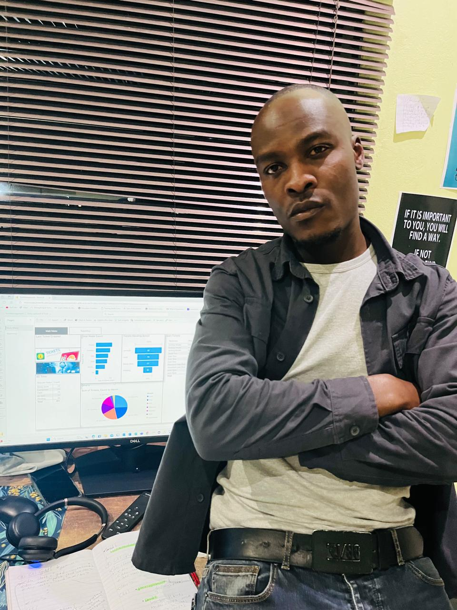

I am a Creative Design Agent

IT Technician & Web Designer
As an IT Technician with an Advanced Diploma in Information Technology, I have strong technical skills in troubleshooting, network management, and software maintenance. I excel in optimizing IT infrastructure and am dedicated to continuous learning, aiming to enhance operational efficiency and service delivery.

PowerBI Developer
An intermediate PowerBI developer who preprocesses, analyse data and design visualizations to create actionable insights valuable to business stakeholders, so that they can quickly make robust informed-decisions with minimal time.